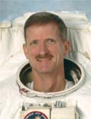

Lyndon B. Johnson Space Center
Houston, Texas 77058
|
National Aeronautics and Space Administration Lyndon B. Johnson Space Center Houston, Texas 77058 |
 |
Biographical Data |
||
Joseph R. "Joe" Tanner
NASA Astronaut (FORMER)
PERSONAL DATA: Born in Illinois in 1950. Married. Two children.
EDUCATION: Graduated from Danville High School, Danville, Illinois, in 1968; received a bachelor of science degree in mechanical engineering from the University of Illinois in 1973.
SPECIAL HONORS: NASA Distinguished Service Medal. NASA Exceptional Service Medals. NASA Space Flight Medals. NASA Stuart M. Present Flight Achievement Award. JSC Superior Achievement Award. Multiple Group and Team Achievement Awards. Outstanding Alumnus of the Department of Mechanical and Industrial Engineering, University of Illinois. Distinguished graduate from Navy Flight Training. Captain of the Swimming Team and "Top 100 Seniors" Award at University of Illinois. Eagle Scout.
EXPERIENCE: Tanner joined the Navy after graduating from the University of Illinois in 1973. He earned his Navy pilot wings in 1975 before serving as an A-7E pilot with Light Attack Squadron 94 (VA-94) aboard the U.S.S. Coral Sea. He finished his active service as an advanced jet instructor pilot with Training Squadron 4 (VT-4) in Pensacola, Florida.
NASA EXPERIENCE: Tanner started working for NASA Johnson Space Center in 1984 as an aerospace engineer and research pilot. His primary flying responsibilities involved teaching the astronaut pilots Space Shuttle landing techniques in the Shuttle Training Aircraft and instructing the pilots and mission specialists in the T-38. In addition to his flying duties, Tanner held positions as the aviation safety officer, the head of the pilot section, and the Deputy Chief of the Aircraft Operations Division (AOD). He has accumulated more than 8,900 hours in military and NASA aircraft.
Selected as an astronaut candidate by NASA in March 1992, Tanner reported to the Astronaut Office in August 1992. He completed one year of initial training and worked in the Shuttle Avionics Integration Laboratory before being assigned to his first mission. Tanner also served as part of the Astronaut Support Personnel team at the Kennedy Space Center, supporting Space Shuttle launches and landings, and as EVA Branch Chief. A veteran of four space flights Tanner has logged over 1069 hours in space, including over 46 EVA hours in 7 space walks. He served as a mission specialist on STS-66 in 1994, STS-82 in 1997, STS-97 in 2000, and STS-115 in 2006.
Tanner retired from NASA in August 2008. Currently Tanner is a Senior Instructor in the University of Colorado Aerospace Engineering Sciences Department in Boulder, Colorado, teaching and mentoring undergraduate and graduate students in space systems design. He is also a self-employed aerospace systems consultant.
SPACE FLIGHT EXPERIENCE: Tanner flew aboard the Space Shuttle Atlantis on the STS-66, November 3-14, 1994, performing the Atmospheric Laboratory for Applications and Science-3 (ATLAS-3) mission. ATLAS-3 was the third in a series of flights to study the Earth’s atmosphere composition and solar effects at several points during the Sun’s 11-year cycle. The mission also carried the CRISTA-SPAS satellite that was deployed to study the chemical composition of the middle atmosphere and retrieved later in the mission. Tanner logged 262 hours and 34 minutes in space and 175 orbits of the Earth.
Tanner performed two space walks as a member of the STS-82 crew to service the Hubble Space Telescope (HST) in February, 1997. The STS-82 crew of 7 launched aboard Space Shuttle Discovery on February 11 and returned to a night landing at Kennedy Space Center on February 21. During the flight the crew completed a total of 5 space walks to improve the science capability of the telescope and replace aging support equipment, restoring HST to near perfect working condition. The crew boosted HST’s orbit by 8 nautical miles before releasing it to once again study the universe. Tanner’s two space walks totaled 14 hours and 01 minutes. The flight orbited the earth 150 times covering 4.1 million miles in 9 days, 23 hours, 37 minutes.
Tanner’s third mission was STS-97 aboard Endeavour (November 30 to December 11, 2000), the fifth Space Shuttle mission dedicated to the assembly of the International Space Station. While docked to the Station, the crew installed the first set of U.S. solar arrays, in addition to delivering supplies and equipment to the station’s first resident crew. Tanner performed three space walks totaling 19 hours 20 minutes. Mission duration was 10 days, 19 hours, 57 minutes, and covered 4.47 million miles.
Tanner next served on the crew of STS-115 Atlantis (September 9-21, 2006) which successfully restarted assembly of the International Space Station. During the 12-day mission the crew delivered and installed the massive P3/P4 truss, and two sets of solar arrays that will eventually provide one quarter of the station’s power. The crew also performed unprecedented robotic work using the Shuttle’s arm. With EVA partner Heide Piper, Tanner made two spacewalks totaling 13 hours and 8 minutes in order to complete truss installation and preparation for solar array and radiator deployment. The mission duration was 11 days, 19 hours and 6 minutes and covered 4.87 million miles.
SEPTEMBER 2008